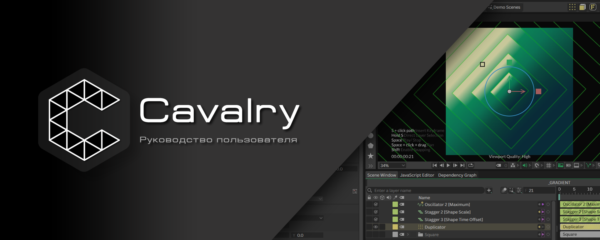

Добро пожаловать в Cavalry!
Вы находитесь на сайте неофициальной документации по программе Cavalry.
Этот ресурс был создан по причине того, что русскоязычной документации изначально не существует. Кроме этого, официальный сайт программы на данный момент не работает в России!
Все материалы, представленные здесь являются не полной копией официального сайта, а его немного изменённой и модернизированной версией.
При работе с сайтом, включая вёрстку, используется нейросеть DeepSeek. Перевод также осуществляется через неё, но с полной перепроверкой и последующей, ручной коррекцией!